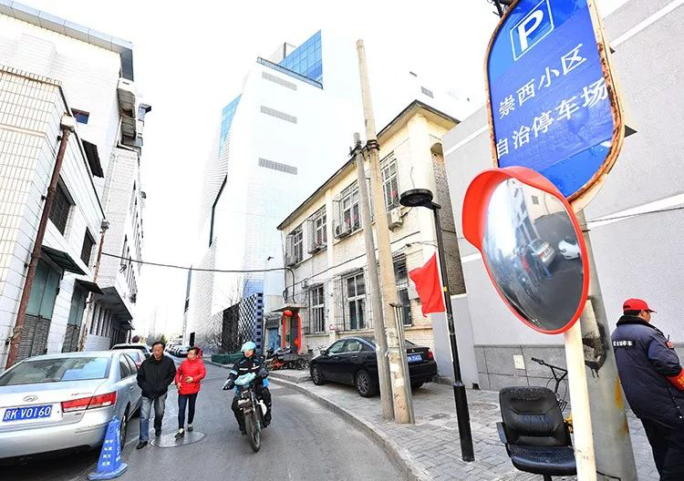
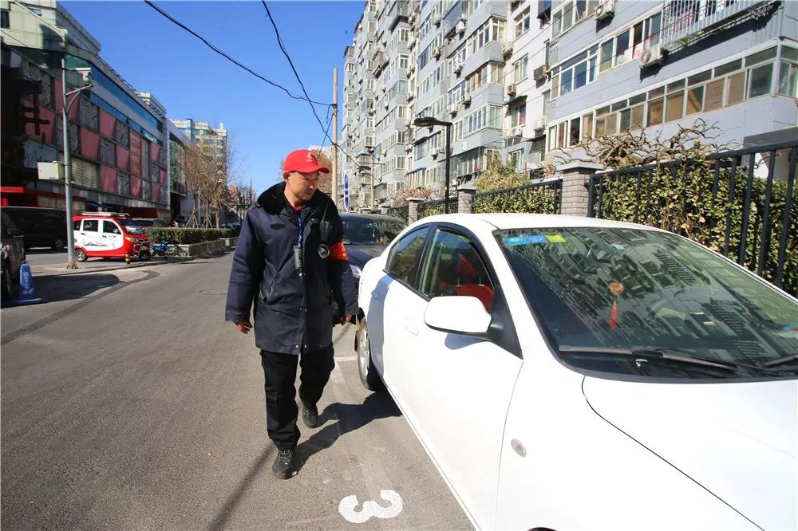
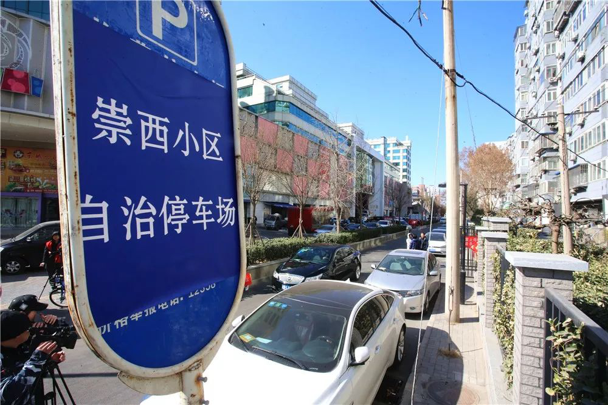
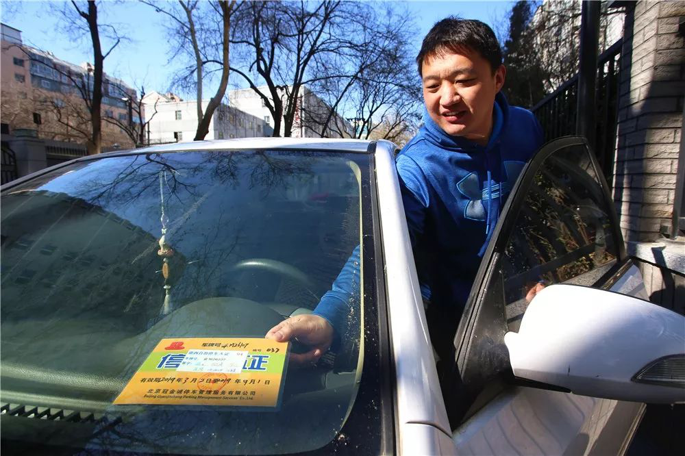
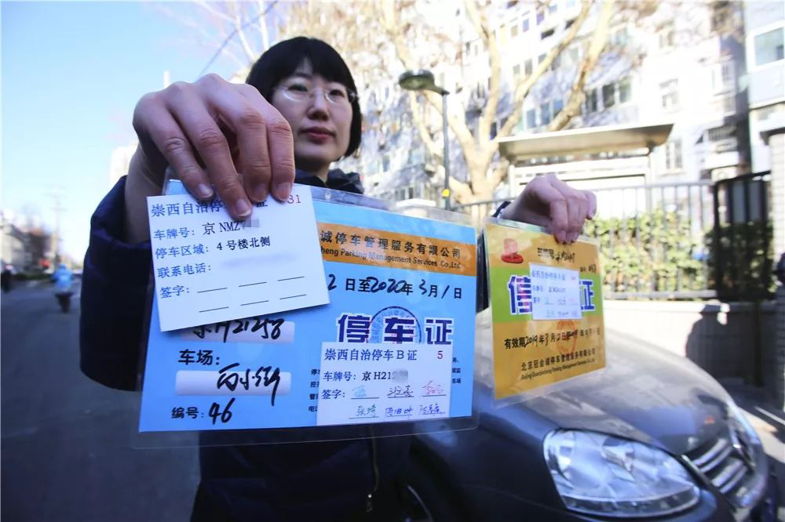
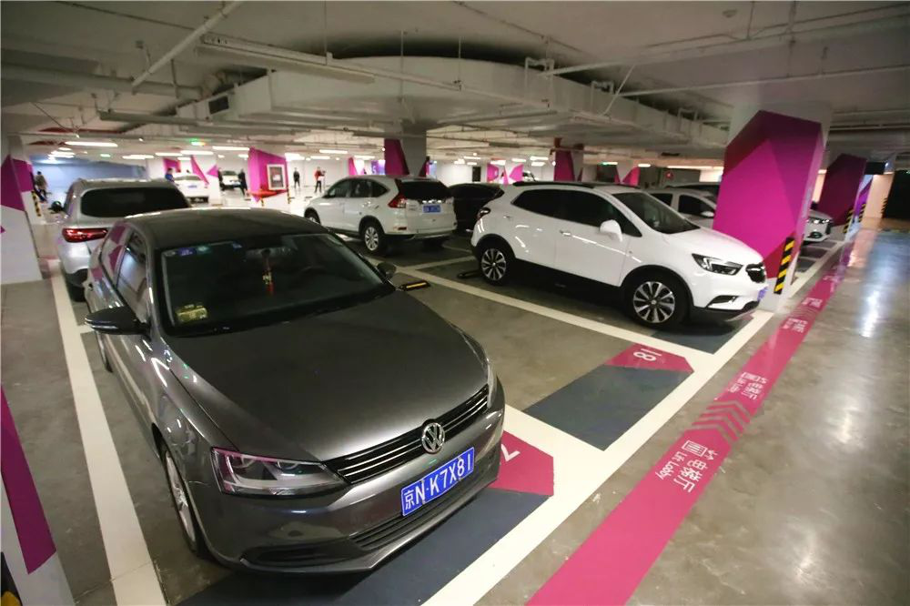
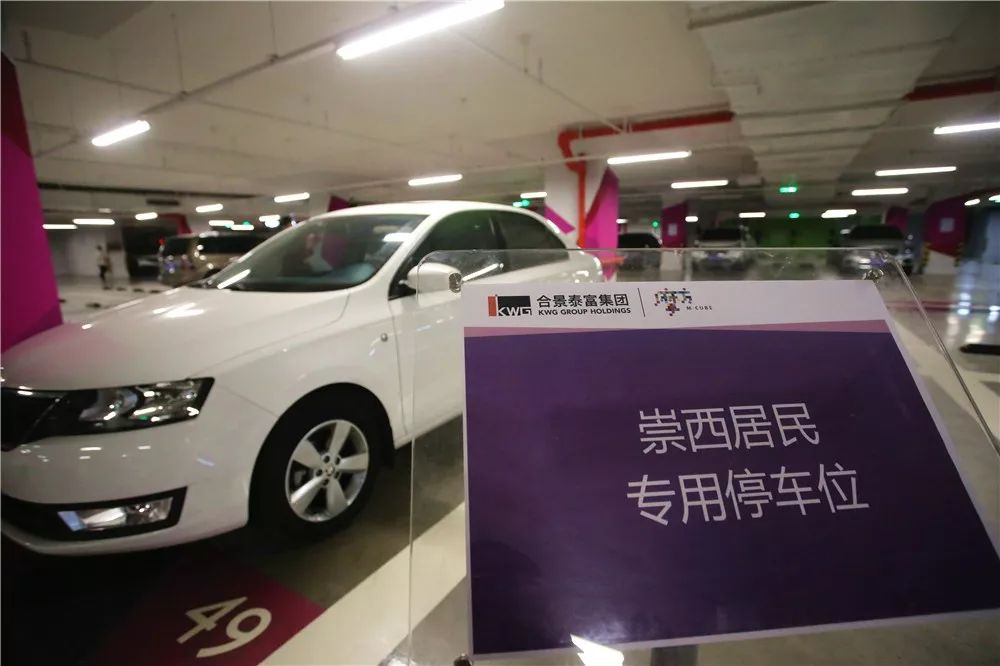
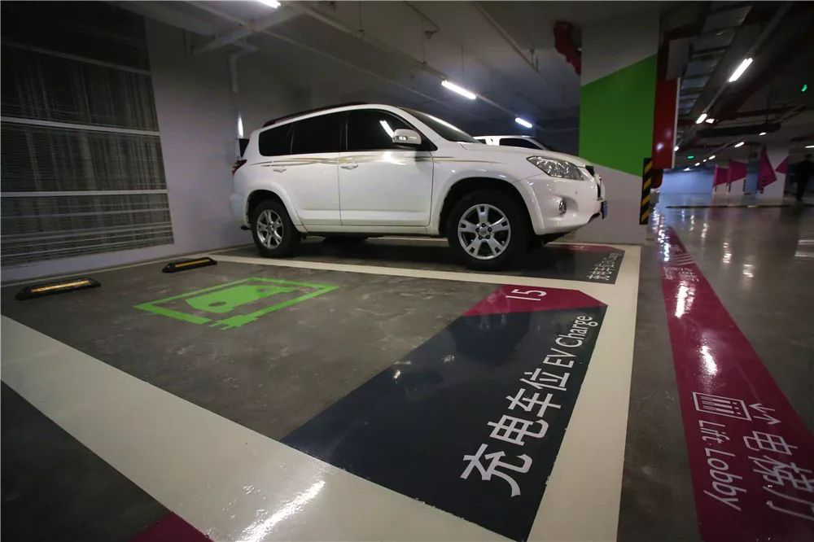
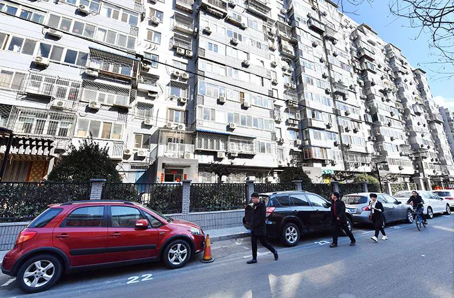

告别“抢车位”！崇西社区启动“停车共享”~
来源：北京东城
老小区长期存停车位缺口
据了解，崇西社区紧邻崇文门西大街，小区的楼房多建成于上世纪70年代，长期无物业管理，停车秩序混乱，仅有的88个占道车位难以满足社区800余户居民和周边社会车辆的停放需求。
“地方就这么大，车却越来越多，还有不少老人用三轮占地方，越占越乱，越乱越占。”崇西社区服务站相关工作人员介绍，崇外街道综合执法队和城管部门曾多次约谈停车管理公司，协助整治周边停车秩序，但因小区车位缺口巨大，整治效果并不理想。
今年1月1日起，东城区实行停车电子收费新政后，崇外街道办事处第一时间开展停车需求登记，最终确定需停车位278个。
利用周边资源开发优惠车位
经过多方沟通，在崇外街道办事处的推动下，城管执法部门积极协调，崇文门西大街南侧和东打磨厂电子收费车位共向社区居民开放49个优惠车位。通过“五证合一”认证的居民在此停车将享受优惠价格，收费标准为2小时1元。
在崇外街道办事处、区城管执法局、区交通委等部门的协调下，小区旁的合景摩方购物中心以优惠的价格向居民提供40个配有充电桩的地下专用车位。
123个共享车位实行自治管理
同时，崇西社区还探索“停车共享”，规划出123个共享车位实行自治管理。
据崇西社区党委书记李佳航介绍，共享车位需要居民提供户口本、身份证、房产证、驾驶证、行驶证，用于判断车主与房主关系，自治车位主要用于社区居民。
为合理使用、错时共享、使车位利用率最大化，崇西社区设立了A、B、D三种类型的停车证。
A证为居民包月停车证，为小区常驻居民使用，一个月230元。
B证为计次停车证，鼓励居民子女常回家探望老人，为他们节约开支，按次计费，一次5元，可停3小时，居民最多可办理100张。
D证为临时免费停车证，主要针对本社区已申请北京市市政路侧车位的居民。当他们碰到车位已满的情况，可停在小区自管车位中。
居民成立停车自管会
李佳航称，社区通过居民议事的方式召开了车主大会，决定通过自荐和推荐的两种方式推选居民代表，成立停车自管会参与停车管理，最终确定了6名代表。未来，崇西社区停车自管会还会参与到自治管理后续的监督工作中去。
如今的崇西社区自治停车场车辆停放井然有序，这些共享车位都规定了相应编号便于管理。停车自管会主任王磊表示，自治车位只对崇西社区居民开放，并且有停车管理员管理，未经认证的社会车辆无法在此停放。
崇西社区8号楼居民张洪义高兴地说：“有了停车证，孩子来看我就方便了，再也不用满处找车位了。”